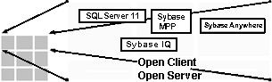

Архитектура SyBase System
Архитектура Sybase System 11
Андрей Юрьевич Тандоев фирма АлконсСофт (095) 918-1380; 362-5138 Фирма Sybase - один из ведущих производителей промышленных СУБД, средств разработки приложений и других продуктов, реализующих технологию клиент-сервер. Выпуская в конце 1995 года Sybase System 11, фирма предлагает оптимизированные по производительности средства для использования в каждой из трех важных областей работы (рис.1):| · | текущая деятельность организаций (обработка транзакций в режиме online - OLTP); |
| · | анализ и прогнозирование (поддержка принятия решений - DSS); |
| · | массовое использование на персональных компьютерах, в точках продаж, малых филиалах (mass deployment). |
| Современные требования к продуктам клиент/сервер | ||||||||||||||||
| Текущая длительность | Прогнозирование и анализ | Расширение бизнеса | ||||||||||||||
OLTP различные виды операций |
DSS хранилища данных |
Массовое использование |
||||||||||||||
|
|
|
||||||||||||||
Sybase System 11, наряду со средствами разработки и другим программным обеспечением Sybase, образует функционально-полный и вместе с тем открытый набор программных средств для каждой области работы (рис.3).
| Современные требования к продуктам клиент/сервер | |||
OLTP различные виды операций |
DSS хранилища данных |
Массовое использование |
|
Базы данных |
Управление данными и транзакциями |
||
Промежуточное ПО |
Удобство работы в разнородной среде Преобразование и перемещение данных |
||
Инструменты |
Быстрая разработка приложений |
||
| Sybase: Единая архитектура, оптимизированные продукты | |||
OLTP различные виды операций |
DSS хранилища данных |
Массовое использование |
|
Базы данных |
SQL Server - серверные продукты Высокая производительность и масштабируемость для бизнес- приложений |
||
Промежуточное ПО |
Enterprise CONNECT - разнородные системы Интероперабельность и репликация |
||
Инструменты |
Семейство продуктов PowerBuilder |
||
| Серверные продукты Sybase System 11 | ||||
OLTP различные виды операций |
DDS хранилища данных |
Массовое использование |
||
 |
СУБД |
|||
| · | Sybase SQL Server - мощная высокопроизводительная реляционная СУБД; |
| · | Sybase MPP - расширение архитектуры Sybase SQL Server, разработанное и оптимизированное для массовой параллельной обработки. Он обладает открытой параллельной архитектурой, предназначенной для поддержки очень больших баз данных (VLDB); |
| · | Sybase IQ - серверный механизм построения битовых индексов для высокоскоростного выполнения сложных запросов к большим объемам данных; |
| · | Sybase SQL Anywhere - "легкая" полнофункциональная СУБД на Intel- платформах для мобильных пользователей и небольших групп; |
| · | Sybase Replication Server - репликационный сервер для построения распределенных систем на основе тиражирования данных; |
| · | Sybase OmniConnect - сервер, обеспечивающий работу приложений- клиентов в "прозрачном" режиме с несколькими серверами так, как будто работа идет с одним сервером; при этом в распределенную систему могут включаться СУБД различных производителей - Sybase, Oracle, IBM и т.д. |
| · | Sybase Backup Server - специальный сервер для высокопроизводительной выгрузки и загрузки баз данных, не требующий остановки SQL Server и не снижающий его производительности; |
| · | Sybase Monitor Server - в сочетании с графической клиентской частью выполняет мониторинг различных параметров состояния SQL Server; |
| · | Sybase Replication Agent - специальные компоненты, отслеживающие изменения в данных через журналы транзакций различных СУБД для включения их в систему репликации. Replication Agent существуют, в частности, для Sybase SQL Server, Oracle, DB2, Sybase SQL Anywhere. |
| · | Sybase Audit Server - записывает информацию о действиях пользователей в специальную базу данных, доступную для анализа. |
| · | Масштабируемость, высокая производительность и эффективность SQL Server 11 основывается на проверенной технологии: |
| · | SQL Server 11 работает на множестве платформ, от персональных компьютеров до многопроцессорных суперсерверов; |
| · | обеспечена очень высокая производительность на каждой платформе благодаря тесному взаимодействию с производителями аппаратуры и оптимизации характеристик; |
| · | полностью симметричная многопоточная СУБД достигает высокой пропускной способности и поддерживает большое количество пользователей. |
| · | SQL Server обеспечивает надежность и целостность данных: |
| · | SQL Server содержит механизмы триггеров и процедур, декларативной ссылочной целостности, транзакций и т.д.; |
| · | СУБД соответствует уровню безопасности C2 NCSA (National Computer Security Council). |
| · | Доступность данных повышает производительность систем: |
| · | Sybase SQL Server программно поддерживает зеркальный журнал и зеркальную базу данных; |
| · | высокоскоростные средства загрузки/восстановления минимизируют влияние этих операций на работу системы. |
| · | Открытость и соответствие стандартам: |
| · | SQL Server соответствует стандартам ANSI/ISO SQL-89 и entry-level ANSI/ISO SQL-92; |
| · | поддерживаются приложения в стандарте ODBC и X/Open XA; |
| · | SQL Server может использовать различные сетевые протоколы, что позволяет соединить клиента и сервер практически на каждой платформе. |
| · | Легкость управления и поддержки: |
| · | наличие продуманной многопоточной архитектуры означает, что на компьютере запускается и требует управления только один процесс - СУБД; |
| · | для симметричной мультипроцессорной обработки можно конфигурировать количество процессоров, распределенных для СУБД; |
| · | имеется полный набор продуктов для конфигурирования областей памяти, пользователей, контроля доступа и производительности - от одной базы данных до множества сетей в масштабах предприятия.\ |
Остановимся на важных особенностях SQL Server 11.
Работа SQL Server с кэшами в памяти Запись в журнал из кэша теперь происходит пакетами. Это снижает уровень конкуренции за доступ к ресурсу журнала и, соответственно, повышает производительность Системный администратор может разделить кэш SQL Server на несколько именованных областей и приписать эти области различным базам данных и объектам баз данных. Имеется возможность группировать именованные области кэша так, чтобы более эффективно проходил обмен с диском большими блоками. Связывание именованных кэшей и объектов баз данных осуществляется при помощи вызова системных процедур (рис.6). Установка максимального числа строк на странице При создании таблицы или индекса можно указать максимальное число строк, хранимых на странице данных или странице индекса. Эта возможность позволяет оптимизировать блокировки для часто обновляемых таблиц. SQL Server использует установленное значение при добавлении и удалении строк. Уровень изоляции транзакций 0 Sybase System 11 по-прежнему поддерживает уровни изоляции транзакций 1-3. К ним добавился уровень 0, который для данных, уже модифицированных некоторой транзакцией, предотвращает их изменение другими транзакциями. Другие транзакции, модифицирующие такие данные, блокируются до завершения первой транзакции. Однако другим транзакциям позволяется считывать измененные, но незафиксированные данные. Уровень изоляции 0 также известен под названием "грязное чтение". Запросы на выборку данных и запросы на их изменение в этом случае не блокируют друг друга, и конкретные приложения, для которых допустим режим "грязного чтения", могут существенно выиграть в производительности. В то же время для транзакций, требующих целостности данных, нельзя использовать уровень изоляции 0.Установка уровня изоляции может производиться либо для конкретного запроса SELECT, либо для сессии пользователя в целом.
Проверка взаимных блокировок SQL Server использует алгоритм выявления взаимных блокировок транзакций. Имеется возможность сконфигурировать то время, через которое выполняется такая проверка. Время задается в миллисекундах, от 500 мс. Цель конфигурирования этого параметра - повышение производительности. Проверка взаимоблокировок - это достаточно длительная операция для сервера. Так как проверка запускается не сразу, выше вероятность освобождения ресурса к моменту запуска проверки. С другой стороны, излишнее увеличение времени задержки может привести к увеличенному времени реакции для приложения, выдавшего взаимоблокирующий запрос. Управление эскалацией блокировок Эскалация блокировок в SQL Server - это предельное количество блокировок страниц данных для таблицы, при достижении которого транзакция будет блокировать таблицу целиком. Имеется возможность управлять этой границей, которая по умолчанию составляет 200 страниц. Несколько процессов, работающих с сетевыми соединениями В предыдущей версии Sybase System 10 сетевым обменом занимался только один процессор в SMP- архитектуре. Это ограничивало масштабируемость сервера на симметричной мультипроцессорной архитектуре, так как было "узким местом" при увеличении числа процессоров. В версии Sybase System 11 сетевым обменом могут заниматься все процессоры. Протокольные службы Библиотеки Sybase обеспечивают работу серверных и клиентских компонент со множеством сетевых протоколов от разных производителей, в том числе TCP/IP, SPX/IPX, Named Pipes, DECNet и другие.Архитектура Sybase позволяет как приложению-клиенту, так и серверу одновременно работать с несколькими интерфейсами. Например, SQL Server для Novell NetWare или Windows NT может одновременно допускать соединения через SPX и TCP/IP.
Сводные особенности SQL Server 11 приведены на рис. 7.
| SQL Server 11.0 - основные особенности | |||||||||||||||||||||||||||||||||||
Быстрый ввод/вывод
|
Баланс загрузки
|
||||||||||||||||||||||||||||||||||
Централизованное хранение данных и доступ к центральной БД в условиях географически распределенной системы приводят к необходимости установления соединений между центральным сервером, хранящим данные, и компьютерами-клиентами. Большинство компьютеров-клиентов отделены от центрального сервера медленными и недостаточно надежными линиями связи, поэтому работа в режиме удаленного клиента становится почти невозможной. Этим можно объяснить часто существующую ситуацию, когда в узлах распределенной системы функционируют группы автоматизированных рабочих мест (АРМ) и эти группы АРМ не связаны друг с другом.
Содержательная сторона задачи обычно требует обмена данными между группами АРМ, так как изменения в данные могут вноситься в одной группе АРМ, а использоваться - в другой. Обмен данными на практике часто реализуется регламентной передачей файлов, либо через модемное соединение, либо "с курьером".
То, что данные доставляются к месту назначения не системными средствами, а путем экспорта/импорта файлов, приводит к необходимости участия человека в процессе обмена, что влечет за собой неоперативность поступления данных и необходимость реализации внешних механизмов контроля целостности и непротиворечивости. Результатом является высокая вероятность ошибок. Кроме того, реализация всех алгоритмов обмена данными и контроля в этом случае возлагается на прикладных программистов, проектирующих АРМ. Объем работ по программированию и отладке подпрограмм обмена соответствует числу различных АРМ. Это также приводит к повышению вероятности ошибок в системе.
В современной технологии АРМ объединены в локальную сеть. АРМ-клиент выдает запросы на выборку и обновление данных, а СУБД исполняет их. Запросы клиента в соответствии с требованиями задачи сгруппированы в логические единицы работы (транзакции). Если все операции с базой данных, содержащиеся внутри транзакции, выполнены успешно, транзакция в целом выполняется успешно (фиксируется). Если хотя бы одна из операций с БД внутри транзакции не выполнилась успешно, то все изменения в БД, произведенные к этому моменту из транзакции, отменяются (происходит откат транзакции). Такое функционирование обеспечивает логическую целостность данных в базе данных.
При распределенной обработке изменения, проводимые приложением-клиентом, могут затрагивать более чем один сервер СУБД. В этом случае для поддержания целостности необходимо применение транзакционного механизма, реализуемого системными средствами, а не прикладной программой.
Производители современных промышленных СУБД обеспечивают поддержку распределенной обработки транзакций. Распределенная обработка данных основывается на синхронных или асинхронных механизмах обработки распределенных транзакций. Эти механизмы могут использоваться совместно. Выбор того или иного механизма зависит от требований конкретной подзадачи, так как каждый механизм обладает сильными и слабыми сторонами.
Синхронная модель. Двухфазная фиксация Исторически первым появился метод синхронного внесения изменений в несколько БД, называемый двухфазной фиксацией (2PC - two-phase commit). Этот механизм реализован сейчас практически у всех производителей СУБД.Метод двухфазной фиксации состоит в том, что при завершении транзакции серверы БД, участвующие в ней, получают команду "приготовиться к фиксации транзакции". После получении подтверждений от всех серверов транзакция фиксируется на каждом из них. Все ресурсы, используемые в транзакции, остаются блокированными до тех пор, пока все компоненты транзакции могут быть атомарно завершены успешно, либо все отменены.
Таким образом, в любой момент времени обеспечивается целостность данных в распределенной системе. Платой за это является требование доступности всех участвующих серверов и линий связи во время проведения транзакции и невозможность работы приложений-клиентов при недоступности, например, удаленного сервера. Кроме того, требуется высокое быстродействие линий связи для обеспечения приемлемого времени реакции у приложения-клиента.
Асинхронное тиражирование транзакций в распределенных системах В распределенной системе идеальным являлось бы состояние, когда каждая программа-клиент обращается только к тем серверам, которые находятся в пределах ее локальной сети, а передача данных и обеспечение целостности осуществляется системными средствами и не требуют специальных действий со стороны прикладной программы. Такое распределение функций возможно и реализуется на практике с помощью механизма асинхронного тиражирования транзакций.Синхронное проведение изменений в участвующих в распределенной транзакции базах данных не всегда является необходимым требованием. Рассмотрим, например, случай ввода данных с измерительного оборудования в цехе и последующего анализа их на уровне управления. Здесь важно обеспечить достаточно малый (но, возможно, ненулевой) интервал времени между изменениями в исходных данных и изменениями в их копии в другом узле системы, где происходит построение отчетов.
Механизм асинхронного тиражирования транзакций (репликации) гарантирует доставку измененных данных на вторичные серверы непосредственно после завершения транзакции, если сервер доступен, или сразу после подключения сервера к сети. Такой подход предполагает хранение дублирующей информации в различных узлах сети и обеспечивает, по сравнению с другими подходами к репликации, снижение трафика, уменьшение времени ответа системы, а также позволяет оптимизировать нагрузку на серверы.
Асинхронная репликация не делает линии связи более надежными или скоростными. Она перекладывает передачу данных, обеспечение их целостности и ожидание при передаче данных с прикладной программы и пользователя на системный уровень.
Асинхронная репликация, в отличие от 2РС, не обеспечивает полной синхронности информации на всех серверах в любой момент времени. Синхронизация происходит через некоторый, обычно небольшой, интервал времени, величина которого определяется быстродействием соответствующего канала связи. Для большинства задач кратковременное наличие устаревших данных в удаленных узлах вполне допустимо.
Вместе с тем асинхронная репликация транзакций принципиально обеспечивает целостность данных, так как объектом обмена данными здесь является логическая единица работы - транзакция, а не просто данные из измененных таблиц.
Репликационный сервер Sybase Replication Server Репликационный сервер, входящий в состав Sybase System 11, использует асинхронную модель репликации транзакций. При разработке модели данных проектируются и правила репликации. Затем проводится конфигурирование системы. При работе прикладной программы изменения данных отслеживаются системными средствами и в соответствии с конфигурацией требуемые данные передаются в удаленную СУБД (рис. 8).Репликационный сервер представляет собой отдельную задачу, запускаемую одновременно с СУБД. Он имеет свой входной язык и стандартный для продуктов Sybase сетевой интерфейс Open Server. Такое разделение снижает нагрузку на СУБД и делает систему в целом более открытой.
Репликация использует интуитивно понятный принцип "публикации" изменяемых данных и "подписки" на изменения.
Транзакция может вносить изменения (т.е. добавлять, удалять и изменять записи) в одну или несколько таблиц базы данных. Выбранные для репликации таблицы специальным образом помечаются. Для каждой такой таблицы или группы ее строк, выбранной по заданному условию, определяется один узел (СУБД), в котором данные таблицы являются первичными. Это тот узел, в котором происходит наиболее активное обновление данных. Репликационному серверу, обслуживающему БД с первичными данными, задается описание тиражирования (replication definition). В этом описании, в частности, могут быть заданы интервалы значений первичного ключа таблицы (или другое условие на первичный ключ), при выполнении которого измененные данные будут тиражироваться из этого узла к подписчикам. Если условие не задано, то описание тиражирования действует для всех записей таблицы.
Возможность тиражирования группы записей таблицы означает, в частности, что часть записей таблицы может быть первичными данными в одном узле, а часть - в других.
В одном или нескольких узлах (СУБД), которым нужны измененные данные, в обслуживающем его репликационном сервере создается подписка (subscription) на соответствующее описание тиражирования. Здесь будет поддерживаться (с небольшой задержкой) копия первичных данных.Современные СУБД используют системный журнал, в который делаются записи о изменениях в базе данных и завершении транзакций. Журнал используется сервером БД для отката и доката транзакций после сбоев и для резервного копирования. Репликация данных в Sybase также использует журнал как источник информации о завершенных транзакциях.
В узле, содержащем первичные данные, для каждой тиражируемой базы данных запускается специальная компонента - репликационный агент (Replication Agent - RA). Он подключается к серверу БД и получает от него уведомления о завершении транзакций. Измененные данные передаются репликационному серверу, обслуживающему этот узел. Репликационный сервер в соответствии с описанием тиражирования и подписками отправляет данные в специальном эффективном протоколе по месту назначения - соответствующим репликационным серверам в удаленных узлах.
Именно в этом месте - между репликационными серверами - связь может быть медленной или недостаточно надежной. Передаваемые данные в составе транзакции при недоступности узла- получателя записываются в стабильные очереди на диске и затем передаются по мере возможности. Данные могут передаваться в удаленный узел по маршруту, содержащему несколько репликационных серверов. Данная возможность лежит в основе построения иерархических систем репликации.
По умолчанию репликационный сервер сохраняет смысл операций. Это значит, что удаление записи из первичной таблицы (выполнение оператора DELETE) приведет к выполнению такого же оператора DELETE в узле, хранящем копию таблицы; выполнение INSERT или UPDATE над первичной таблицей точно так же приведет соответственно к добавлению или обновлению записи в копии таблицы в результате работы системы репликации. Имеется гибкий механизм конфигурирования так называемых функциональных строк (function strings), которые переопределяют любую операцию на макроязыке с возможностью подстановки параметров.
В одной базе данных могут содержаться как первичные данные, так и данные-копии. Приложение- клиент, работающее со своей СУБД, может вносить изменения напрямую (операторами INSERT, DELETE, UPDATE) только в первичные данные. Для изменения копии данных предназначен механизм асинхронного вызова процедур.
Для работы механизма асинхронного вызова процедур в нескольких базах данных создаются процедуры с одинаковым именем и параметрами, но, возможно, с различным текстом. В одной базе данных процедура помечается как предназначенная к репликации. Вызов этой процедуры вместе со значениями параметров передается через журнал и механизм репликации к узлам- подписчикам. Затем в базах данных подписчиков вызывается одноименная процедура с теми же значениями параметров.
Таким образом, для обновления "чужих" для узла данных (копии данных) прикладная программа- клиент вместо выполнения оператора UPDATE вызывает заранее определенную в этом узле хранимую процедуру и передает ей параметры (например, значение первичного ключа и новые значения для обновляемых колонок). Тело этой процедуры пустое и она не выполняет никаких действий, однако ее вызов записывается в журнал. Механизм репликации обеспечивает вызов на узле, содержащем первичные данные, одноименной процедуры с подстановкой параметров. В теле этой процедуры может быть записан оператор UPDATE, обновляющий первичные данные. Тот же механизм репликации передаст изменения в данных узлу, инициировавшему операцию.
Репликационный сервер и Replication Agent реализованы в виде отдельных модулей и могут выполняться не на том же компьютере, что сервер базы данных. Включение в систему репликационного сервера практически не оказывает влияние на загрузку сервера первичной базы данных.
СУБД, хранящая вторичные данные, может быть любой СУБД, доступной через шлюз, в том числе Oracle, Informix, Ingres, DB2, RMS, ISAM, или даже приложение Open Server.
СУБД, хранящая первичные данные, требует наличия для нее RA. Сейчас RA имеется для Sybase SQL Server, Oracle, DB2, Sybase SQL Anywhere. Готовятся RA и для других СУБД. Интерфейс RA открыт и возможно создание RA для нестандартных источников данных.
Некоторые применения тиражирования данных:
| · | сервер, выполняющий активное обновление данных (OLTP), разгружается от сложных запросов, связанных с поддержкой принятия решений (DSS); |
| · | консолидация данных от подразделений в центре; |
| · | обмен данными по медленным и/или ненадежным линиях связи; |
| · | поддержание резервной базы данных; |
| · | построение сети равноправных узлов, обменивающихся данными. |
OmniConnect осуществляет унифицированный доступ приложений к разнородным источникам данных. Специальные шлюзовые компоненты организуют работу в системе с любой промышленной СУБД, включая Oracle, Informix, Ingres, DB/2, RMS, ISAM. Приложения-клиенты при этом работают только с сервером OmniConnect на диалекте SQL фирмы Sybase (TransactSQL), а необходимая трансляция языка SQL и преобразование типов данных автоматически осуществляется шлюзовыми модулями.
Для работы с хранилищами данных на "больших" ЭВМ (mainframe) Sybase поставляет также продукцию фирмы Micro Decisionware - лидера на рынке промежуточного ПО (Sybase купила фирму MDI в начале 1994 года). MDI предоставляет шлюзы в DB/2, SQL/DS, SQL/400, в том числе через IBM DRDA-интерфейс.
OmniConnect хранит информацию о размещении таблиц на том или ином сервере БД. Централизованно хранятся и исполняются глобальные хранимые процедуры. Приложение-клиент может осуществлять транзакции, в которых участвуют таблицы из различных БД, а также выполнять процедуры, которые OmniConnect при работе с СУБД, отличными от Sybase, прозрачно преобразует к соответствующему диалекту SQL.
Sybase MPP Sybase MPP - это расширение архитектуры Sybase SQL Server, разработанное и оптимизированное для массовой параллельной обработки. Он обладает открытой параллельной архитектурой, предназначенной для поддержки очень больших баз данных (VLDB). Sybase MPP использует стандартный SQL и открытые интерфейсы. С ним работают те же приложения, что и с SQL Server, без необходимости перепрограммирования (рис.9).Sybase MPP выполняет параллельно операции считывания (выборки), добавления, обновления и удаления записей. Параллельно выполняются и загрузка/восстановление, и создание индексов. Архитектура Sybase MPP не содержит узких мест, связанных с разделяемой памятью или разделяемым дисковым пространством. При выполнении параллельной выборки Sybase MPP использует индексы.
Дополнительные процессоры и диски могут добавляться в систему постепенно, достигая масштабируемости в сотни раз. Имеется возможность тиражировать и перестартовать ключевые компоненты системы так, чтобы обеспечить быстрое восстановление при сбоях.
С точки зрения приложений, пользователей и разработчиков Sybase MPP выглядит как сервер с одной логической базой данных. Для этой базы данных работает оптимизатор запросов. Поддерживаются хранимые процедуры и глобальный репозитарий, где хранится информация о размещении данных.
Для управления системой имеются графические утилиты.
Sybase IQ В системах поддержки принятия решений используется два типа продуктов. Одни оптимизированы для предварительно известных запросов, а другие - для запросов "на лету" (т.е. заранее неизвестных). Sybase IQ не требует заранее определять "пути", то есть не требует использовать предварительные знания о структуре запросов. С использованием побитовой схемой индексации Sybase IQ практически все данные в БД могут быть проиндексированы. Поэтому никакой запрос не приведет к просмотру записей таблиц. Sybase IQ обладает высокой производительностью для заранее запланированных запросов и отлично справляется с запросами "на лету".Sybase IQ не требует изменений в приложениях - любая программа, работающая с SQL Server, будет работать с IQ. Собственно Sybase IQ не выполняет отдельных обновлений данных. Он в прозрачном для клиента режиме передает их для выполнения SQL Server. Sybase IQ очень эффективно выполняет пакетные дополнения к базе данных. В отличие от технологий, основанных на B-деревьях, при добавлении 10 миллионов строк в таблицу, где уже есть десятки миллионов строк, Sybase IQ просто построит дополнительные страницы индекса и не потребует перестраивать весь индекс целиком.
Sybase Backup Server Sybase Backup Server - это специальный сервер для высокопроизводительной выгрузки и загрузки баз данных, не требующий остановки SQL Server и не снижающий его производительности.Дамп базы данных и журнала производится без прекращения использования БД. Поэтому имеется возможность выполнять дамп часто, что повышает надежность системы. Backup Server выполняет весь необходимый ввод-вывод. Команды на дамп или загрузку выдаются непосредственно для SQL Server, который обращается к Backup Server. Основные характеристики Backup Server:
| · | можно выполнять дамп параллельно частями так, что данные из одной БД и журнала будут одновременно записываться на несколько (до 32) устройств; |
| · | один дамп может занимать несколько лент или файлов; |
| · | имеется возможность выполнять выгрузку и загрузку в локальной сети так, что SQL Server находится на одном компьютере, а Backup Server и лента - на другом; |
| · | поддерживаются все платформо-специфичные опции работы с лентой, такие, как именование томов, размеры блоков и т.д.; |
| · | несколько выгрузок и загрузок могут управляться с одного или нескольких локальных или удаленных серверов. |
Выгрузка производится в два этапа - сначала выгружается состояние данных на момент начала дампа, а затем оно дополняется изменениями, произошедшими за время дампа.
Имеется возможность получения как полного дампа базы данных, так и дампа изменений.
Инструменты управления SQL-сервером Для анализа функционирования сервера Sybase предоставляет компоненту SQL Monitor, представляющую на любом компьютере-клиенте в графическом виде данные по загрузке сервера, вводу/выводу, интенсивности транзакций, использованию памяти сервером.SQL Monitor как клиент взаимодействует с SQL Monitor-сервером, выполняющемся на том же компьютере, что и SQL Server. SQL Monitor-сервер использует разделяемую память для доступа к информации о работе SQL Server, и поэтому не загружает SQL Server.
Управление конфигурацией Для управления сервером имеется как набор хранимых процедур и set-команд, так и графическое средство.При работе с параметрами конфигурации в командном режиме введено три уровня представления - базовый уровень, служащий для управления основными параметрами, промежуточный уровень и детальный уровень, на котором доступны все параметры тонкой настройки (рис.10). Параметры организованы иерархически в соответствии с группами функций SQL Server, которыми они управляют. Имеется возможность создать несколько поименованных конфигураций и легко переключаться между ними.
Отслеживание действий пользователей Серверный продукт Sybase Audit Server записывает информацию о действиях пользователей в специальную базу данных, доступную для анализа. Архитектура библиотек Sybase System 11 Библиотеки Sybase поддерживают локализацию POSIX (IEEE Portable Operating System Interface for Computing Environments) и используют информацию о кодовых таблицах, национальном языке, форматах чисел, форматах валюты, форматах даты/времени.В библиотеках Sybase информация о локализации используется на уровнях контекста (приложения), соединения или элемента данных, причем элемент данных может быть колонкой, параметром процедуры или параметром сообщения. Локализация по умолчанию наследуется с верхнего уровня на нижний.
Для поддержки локализации библиотеки Sybase:
| · | не содержат внутри текстов сообщений. Сообщения находятся во внешних файлах; |
| · | не ограничивают символ одним байтом; |
| · | не предполагают, что строки заканчиваются нулем; |
| · | не содержат внутри информацию о форматах чисел, дат, валюты, а используют локализационную информацию. |
При разработке приложений-клиентов на языке 3-го поколения используются библиотеки с Cи- интерфейсом: DB-Library, CT-Library или ODBC (только под Windows).
При разработке приложений серверного типа используется библиотека Open Server. Этот набор блоков для построения сервера может использоваться, например, для доступа к нестандартному оборудованию или построения шлюзов.
Интерфейсы программирования клиента:библиотеки DB- Library и CT-Library DB-Library использовалась в предыдущих версиях Sybase для разработки приложений. Sybase System 11 обеспечивает обратную совместимость с DB-Library.CT-Library впервые появилась в Sybase System 10. Она используется в новых приложениях, в том числе для написания приложений с использованием асинхронной обработки, возможностей распределенной обработки, одновременным использованием Open Client и Open Server.
Все продукты Sybase используют механизм сообщений об ошибках. В библиотеках этот механизм реализован через callback-модель, т.е. функции приложения, асинхронно вызываемые при возникновении ошибочных ситуаций и сообщений.
ODBC-интерфейс Спецификация ODBC фирмы Microsoft определяет универсальный промежуточный интерфейс между приложениями-клиентами в среде Windows и Windows NT и различными реляционными базами данных.ODBC API представляет собой набор вызовов функций. Доступ к базе данных в нем задается операторами SQL, которые передаются соответствующим функциям в виде строковых параметров. Спецификация ODBC, как и Embedded SQL, поддерживает курсоры. Имеется возможность вызывать хранимые процедуры. Из программы могут выдаваться любые операторы SQL, в том числе DDL-операторы.
ODBC-драйверы для Sybase выпускают несколько фирм, в том числе фирма INTERSOLV. Такой драйвер входит в состав Sybase Open Client.
Большинство приложений, связанных с обработкой данных в среде MS-Windows, поддерживают ODBC-интерфейс или DB-Library, и, соответственно, имеют доступ к СУБД Sybase. Среди таких приложений Microsoft Excel, Word, Access, Visual Basic.
Embedded SQL Sybase Embedded SQL прекомпилятор позволяет программисту использовать ANSI-операторы SQL в тексте программы на Си и Коболе. Для оптимизации статических запросов SQL прекомпилятор может генерировать хранимые процедуры. Прекомпилятор интегрирован с XA- интерфейсом для работы с мониторами транзакций. Интерфейс программирования серверов Open Server Когда на предприятии используются данные, поставляемые внешними источниками, например, собираемые с измерительных приборов, желательно обеспечить к ним доступ из приложений- клиентов и хранимых процедур.Технология и библиотеки OpenServer, входящие в состав Sybase System 11, позволяют разрабатывать собственные приложения, использующие данные от технологического оборудования. Для приложений клиента такие программы "выглядят" как хранимые процедуры на Sybase-совместимом сервере базы данных.
Другое применение Open Server - разработка серверных компонент для математической или криптографической обработки данных. Обработчик Open Server может быть использован как приложением-клиентом, так и вызван из хранимой процедуры SQL Server.
Примером применения технологии Open Server может служить реализация доступа к электронной почте из хранимых процедур.
SQL Anywhere 5.0 - составная часть Sybase System 11 Sybase SQL Anywhere - это новое название для пятой версии Watcom SQL. Это название отражает как интеграцию продукта в архитектуру Sybase System 11 (рис.4), так и появление мощных средств обеспечения работы удаленных пользователей и обмена данными. С объединением компаний Sybase и Powersoft в феврале 1995 года фирма Watcom вошла в состав Sybase, Inc.Основной диалект SQL, поддерживаемый SQL Anywhere, называется Watcom SQL. Среди новых качеств продукта - совместимость с Transact-SQL (версия SQL в линии продуктов Sybase).
Диалект Watcom SQL содержит все конструкции, характерные для "больших" СУБД (декларативная ссылочная целостность, процедуры, триггеры) и соответствует стандарту ANSI SQL92. Сервер ведет журнал транзакций. Имеется одинаковый по функциональности сетевой сервер и "локальный" вариант, который может запускаться на одном компьютере с приложением- клиентом. Для приложения все равно, обращается ли оно к локальному или сетевому варианту.
SQL Anywhere работает на платформах Windows 3.x, Windows NT и Windows 95 (32-разрядный), OS/2, DOS, Novell NetWare и QNX. В каждой из этих сред SQL Anywhere максимально интегрирован. Среди поддерживаемых сетевых протоколов - TCP/IP, Named Pipes, IPX/SPX.
Приложения-клиенты могут разрабатываться с использованием ODBC, Embedded SQL и собственного интерфейса Watcom HLI (рис.11). Имеется собственный DDE-сервер для интеграции, например, с Excel, Word или Visual Basic.
SQL Anywhere имеет продуманную языковую поддержку. При создании каждой базы данных указывается, в частности, порядок сортировки символов. Эта информация используется при выполнении сортировки ORDER BY, сравнения символов без учета регистра, использовании символов для написания идентификаторов объектов базы данных, обработке фразы LIKE и различных строковых функций.Кроме встроенных языков и кодовых страниц (включая русский), SQL Anywhere позволяет создавать определенные пользователем новые конфигурации. Для этого описание вводится в текстовом виде и затем преобразуется специальной утилитой.
Очень важны весьма невысокие требования продукта к ресурсам. Он может запускаться при 1Мб свободной оперативной памяти и работать в минимальной по памяти конфигурации Windows.
С другой стороны, с выходом SQL Anywhere группы разработчиков могут использовать этот продукт с уверенностью в том, что при необходимости возможен переход на более мощные аппаратные и программные платформы (RISC-станции и Sybase SQL Server).
Действительно, включение SQL Anywhere в состав линии продуктов Sybase придало новые качества продукту и сделало его выбор для рабочих групп еще более привлекательным не только по цене, но и по наиболее важным характеристикам:
| · | собственная репликация данных - SQL Remote; |
| · | поддержка системы репликации Sybase Replication Server; |
| · | графический инструмент администрирования SQL Central; |
| · | поддержка Transact-SQL; |
| · | поддержка ODBC 2.1; |
| · | повышение производительности и мониторинг производительности; |
| · | расширения языка Watcom SQL; |
| · | универсальный серверный интерфейс SQL Anywhere Open Server. |
База данных SQL Anywhere может участвовать в схеме репликации Sybase Replication Server. Это мощная, сложная и высокопроизводительная компонента, тиражирующая данные между разнородными СУБД, описана выше (рис.8). Для интеграции с Replication Server используется специальный шлюзовой компонент - Open Server Gateway для SQL Anywhere, который "транслирует" стандартный для продуктов Sybase интерфейс Open Client/Server в интерфейс SQL Anywhere.
Для отслеживания изменений в базе данных SQL Anywhere предусмотрена компонента Replication Agent.
Другой механизм репликации (SQL Remote) - это система репликации только между базами данных SQL Anywhere. Это менее гибкая система, чем Replication Server; например, в ней жестко требуется, чтобы имена объектов тиражирования были одинаковыми во всех базах данных. Зато SQL Remote легко администрируется, пригоден для широкого использования в том числе и в случаях, когда базы данных не имеют прямого соединения друг с другом.
Cобственная репликация данных SQL Remote SQL Remote - это система репликации (тиражирования данных) между базами данных SQL Anywhere, основанная на передаче сообщений. Эта система администрируется из единого центра и наиболее подходит для обмена данными с laptop-компьютерами и другими пользователями, связь с которыми есть от случая к случаю. Система SQL Remote может использовать для репликации средства электронной почты (MAPI, VIM, SMTP), файловый обмен и готовящийся к выходу механизм Sybase Messaging Services.SQL Remote реплицирует данные между "консолидированной" БД и одной или несколькими "удаленными" БД. В качестве удаленных могут выступать как сетевые серверы SQL Anywhere, так и локальные однопользовательские БД. SQL Anywhere поддерживает иерархическую модель репликации (рис.12).
Консолидированная БД содержит все данные. Удаленные БД могут содержать часть данных или все данные (удаленные БД, разумеется, могут содержать любые другие таблицы, не участвующие в репликации).
Изменения, проведенные в консолидированной БД, тиражируются в удаленные БД. Изменения, проведенные в одной из удаленных БД, попадают в консолидированную БД и затем в другие удаленные БД.
Для обмена данными SQL Remote использует сообщения. Поэтому необязательно иметь прямое сетевое соединение с удаленными БД. Достаточно организовать обмен сообщениями, например, по электронной почте.
Приложения в архитектуре клиент-сервер, работающие в режиме сессии, используют тот или иной сетевой транспорт (TCP/IP, IPX/SPX и др.) Точно так же приложения, работающие с сообщениями, используют службы сообщений, такие как Microsoft Messaging API (MAPI), Lotus Vendor Independent Messaging (VIM), Internet Simple Mail Transfer Protocol (SMTP) или даже простой обмен файлами.
Службы сообщений используют адрес получателя для сохранения и передачи сообщений к пункту назначения. Например, система электронной почты может сохранять сообщение на сервере до тех пор, пока соответствующий пользователь не подключится к системе.В отличие от режима сессии, многие системы, основанные на сообщениях, не гарантируют ни обязательной доставки сообщения, ни определенного порядка прихода нескольких сообщений. Поэтому SQL Remote реализует специальный протокол, который гарантирует проведение обновлений в правильном порядке.
Публикация - это объект, описывающий тиражируемые данные. Удаленные пользователи оформляют подписки на публикации для получения этих данных.
Публикация может включать данные из нескольких таблиц. Каждая таблица может быть представлена либо целиком, либо подмножеством столбцов, либо даже подмножеством строк по условию выборки.
Система репликации администрируется централизованно в консолидированной БД средствами графического инструмента SQL Central.
Публикация может быть использована несколькими подписчиками.
В SQL Remote реализована поддержка систем передачи сообщений MAPI, VIM, SMTP и файлового обмена.
При проектировании любой схемы репликации, где происходит обновление в нескольких БД, следует учитывать возможность возникновения и разрешения конфликтов. Рассмотрим очень кратко, как эта проблема решается в SQL Remote.
| · | Два пользователя добавляют в таблицу строку с одинаковым первичным ключом (ПК). В этом случае второй INSERT закончится неудачно. Этой ситуации можно избежать при правильном проектировании БД. Например, включить колонку - идентификатор БД, где происходит обновление, в первичный ключ такой таблицы. |
| · | Два пользователя обновляют одну и ту же колонку в таблице (не ПК). Если в системе требуется обеспечить пользователям такую потенциально опасную возможность, то SQL Anywhere предоставляет средство обнаружить и разрешить конфликт с помощью специального типа триггера (RESOLVE UPDATE). |
Главное окно SQL Central похоже по дизайну на Windows 95 Explorer. Оно разделено на две панели. В левой панели в виде дерева представлены серверы, базы данных и схемы баз данных с глубиной, доходящей до каждого "контейнера" - объекта базы данных. В правой панели показано содержимое выбранного контейнера.
Из SQL Central осуществляются все административные действия от создания баз данных, загрузки/выгрузки до создания таблиц, процедур и назначения полномочий. SQL Central также управляет системой репликации SQL Remote, описанной выше.
Для удобства предусмотрен drag-and-drop интерфейс, контекстная подсказка и контекстное меню по правой кнопке мыши.
Поддержка Transact-SQL SQL Anywhere 5.0 включает набор расширений языка Watcom SQL в сторону диалекта Transact- SQL Sybase, используемого в Sybase SQL Server на различных платформах.Диалект Transact-SQL сам по себе не является лучше или хуже диалекта Watcom SQL. Достигнутая совместимость означает, что на нижних уровнях распределенной информационной системы можно использовать "легкую" по ресурсам, мощную по функциональности и дешевую СУБД SQL Anywhere, а на уровне выше - промышленную высокопроизводительную СУБД Sybase. При этом приложения, работающие с этими СУБД, окажутся инвариантны к тому, с какой СУБД они работают.
Поддержка ODBC 2.1 SQL Anywhere поддерживает ODBC API не только на платформах Windows и Windows NT, но и в DOS, OS/2 и QNX. SQL Anywhere 5.0 поддерживает спецификацию ODBC 2.1 уровня 2. Повышение производительности и мониторинг производительности Использование журнала транзакций в SQL Anywhere уменьшает время фиксации каждой транзакции. Сервер SQL Anywhere является 32-разрядным (кроме платформы Windows 3.X).СУБД использует оптимизатор, который выбирает лучшую стратегию для выполнения каждого запроса. Для этого оптимизатор определяет стоимость каждой стратегии, оценивая требуемое количество считываний и записей на диск. Выбранная стратегия задает, в каком порядке происходит доступ к таблицам в запросе и следует ли использовать индекс для каждой таблицы.
Окно статистики в интерактивном средстве для формирования запросов (ISQL) позволяет просмотреть выбранный план выполнения любого оператора SQL.
В SQL Anywhere предусмотрен набор статистической информации, предназначенной для оценки производительности. Эта информация доступна из инструмента администратора SQL Central и приложений-клиентов. В дополнение, подобная информация предоставляется из SQL Anywhere в монитор производительности Windows NT.
WSQL DDE-сервер Dynamic Data Exchange (DDE) - это метод взаимодействия приложений. DDE использует архитектуру клиент-сервер. Так, приложение-клиент (например, Excel или Word) может запрашивать данные у приложения-сервера.WSQL DDE-сервер - это Windows-приложение, которое позволяет выбирать и изменять данные в БД SQL Anywhere. Получаемые данные могут передаваться приложению-клиенту через буфер в памяти или через системный буфер (Clipboard).
Место SQL Anywhere среди СУБД для рабочих групп Нам было особенно интересно изучить новую версию Watcom SQL после работы с продуктами фирмы Sybase (система 10) и знакомства с Microsoft SQL 6.0. На наш взгляд, новой версии SQL Anywhere 5.0 приданы все качества СУБД для рабочих групп, какие существуют на сегодняшний день у конкурентов, и кое-что еще, делающее этот продукт технически лидером - собственная система репликации, основанная на механизме передачи сообщений и электронной почте.С другой стороны, SQL Anywhere подкреплен совместимостью с линией продуктов Sybase System 11, характеристики которой рассматривались недавно в ComputerWorld и PC Week [4].
Все эти факторы (включая и ценовой) делают выбор SQL Anywhere весьма привлекательным для массового использования как на "нижних" уровнях больших информационных систем, так и в качестве ядра относительно небольших разработок.